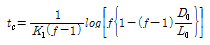
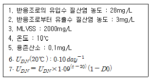
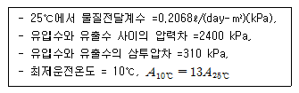
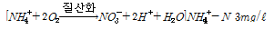
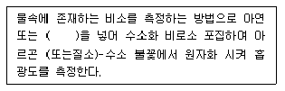
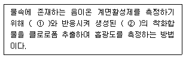
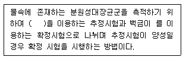

수질환경기사 (2012-05-20 기출문제)
1과목: 수질오염개론
1. 하수 등의 유입으로 인한 하천 상태를 Whipple의 4지대로 나타낼 수 있다. 그 중 ‘활발한 분해지대’에 관한 내용으로 옳지 않은 것은?
- 용존산소가 없어 부패상태이며 물리적으로 이 지대는 회색 내지 흑색으로 나타난다.
- 혐기성세균과 곰팡이류가 호기성균과 교체되어 번식한다.
- 수중의 CO2 농도나 암모니아성 질소가 증가한다.
- 화장실 냄새나 H2S에 의한 달걀 썩는 냄새가 난다.
(정답률: 84%)

2. 다음의 등온 흡착식 중 (1)한정된 표면만이 흡착에 이용되고 (2)표면에 흡착된 용질물질은 그 두께가 분자 한 개 정도의 두께이며 (3)흡착은 가역적이고 평형조건이 이루어졌다는 가정 하에 유도된 식은?
- Freudlich 등온흡착식
- Langmuir 등온흡착식
- BET 등온흡착식
- BCT 등온흡착식
(정답률: 82%)
3. 금속 전도체와 전해질 용액을 통해서 흐르는 전류 중 금속을 통해 흐르는 전류의 특성으로 옳지 않은 것은?
- 금속의 화학적 성질은 변하지 않는다.
- 전류는 전자에 의해 운반된다.
- 온도의 상승은 저항을 증가시킨다.
- 대체로 전기저항이 용액의 경우보다 크다.
(정답률: 78%)
4. 질산화미생물의 일반적 특성과 가장 거리가 먼 것은?
- 독립영양성 미생물이다.
- 질화반응으로 알칼리도를 생성한다.
- 증식속도가 느리다.
- 중온성미생물이다.
(정답률: 63%)
5. 무기화합물과 유기화합물의 일반적 차이점으로 옳지 않는 것은?
- 유기화합물들은 대체로 가연성이다.
- 유기화합물들은 대체로 물에 잘 녹는다.
- 유기화합물들은 일반적으로 녹는점과 끓는점이 낮다.
- 유기화합물들은 대체로 이온 반응보다는 분자반응을 하므로 반응속도가 느리다.
(정답률: 70%)
6. 어떤 하천의 BOD5가 220mg/L이고, BODu가 470mg/L이다. 이 파천의 탈산소계수(K1)의 값은? (단, 상용대수 기준)
- 0.045/day
- 0.⑤5/day
- 0.065/day
- 0.075/day
(정답률: 76%)
7. 어떤 시료의 상물학적 분해 가능 유기물질의 농도가 37mg/L이며, 경험적인 분자식이 C6H11ON2 라고 할 때 이 물질의 이론적 최종 BOD는?
- 63mg/L
- 83mg/L
- 103mg/L
- 123mg/L
(정답률: 63%)
8. 유량400000 m3/day의 하천에 인구 20만명의 도시로부터 30000 m3/day의 유량으로 하수가 유입되고 있다. 하수가 유입되기 전 하천의 BOD는 0.5mg/ℓ이고, 유입 후 하천의 BOD를 2mg/ℓ 로 하기 위해서 하수처리장을 건설하려고 한다면 이 처리장의 BOD 제거 효율은? (단, 인구 1인당 BOD 바출량은 20g/day라 한다.)
- 약 84%
- 약 87%
- 약 89%
- 약 92%
(정답률: 63%)
9. 어느 하천의 DO가 8mg/ℓ, BODu는 10mg/ℓ이었다. 이 때 용존산소곡선(DO Sag Curve)에서의 임계점에 도달하는 시간은? (단, 온도는 20℃, DO 포화농도는 9.2mg/ℓ, K1=0.1/day, K2=0.2/day,

이다. 상용대수 기준)- 2.46일
- 2.64일
- 2.78일
- 2.93일
(정답률: 68%)
10. Glucose(C6H12O6)100mg/L 인 용액의 ThOD/TOC의 비는?
- 0.87
- 1.43
- 1.83
- 2.67
(정답률: 75%)
11. 다음 화합물 (C5H7O2N)에 대한 이론적인 BOD10/COD는? (단, 탈산소계수 0.1/day, base는 상용대수, 화합물은 100% 산화된(최종산물은 CO2, NH3, H2O), COD=BODU)
- 0.80
- 0.85
- 0.90
- 0.95
(정답률: 76%)
12. 호소의 영양상태를 평가하기위한 Carlson지수를 산정하기 위해 요구되는 Parameter와 가장 거리가 먼 것은?
- Chlorophyll-a
- SS
- 투명도
- T-P
(정답률: 75%)
13. Formaldehyde(CH2O) 500mg/ℓ의 이론적 COD값은?
- 약 512 mg/ℓ
- 약 533 mg/ℓ
- 약 553 mg/ℓ
- 약 576 mg/ℓ
(정답률: 74%)
14. 산소의 포화농도가 9 mg/ℓ인 하천에서 처음의 DO 농도가 6 mg/ℓ라면 물이 3일 유하 한 후의 하류에서의 DO부족량(mg/ℓ)은? (단, 최종 BOD=20mg/ℓ이며, K1과 K2는 각각 0.1day-1과 0.2day-1, 밑수는 상용대수이다.)
- 약 2.7
- 약 3.3
- 약 4.7
- 약 5.8
(정답률: 55%)
15. 방사성 물질인 스트론튬(Sr90)의 반감기가 29년이라면 주어진 양의 스트론튬(Sr90)이 99% 감소하는데 걸리는 시간은?
- 143년
- 193년
- 233년
- 273년
(정답률: 67%)
16. 글루코스(C6H12O6) 100mg/L 인 용액을 호기성 처리할 때 이론적으로 필요한 질소량(mg/L)은? (단, K1(상용대수)=0.1/day, BOD5:N=100:5 BODU=ThOD로 가정함)
- 약 3.7
- 약 4.2
- 약 5.3
- 약 6.9
(정답률: 44%)
17. 20℃에서 BOD8가 100mg/ℓ 이었다면 이 시료의 BOD3은? (단, K1(상용대수)=0.15/일)
- 약 47 mg/ℓ
- 약 58 mg/ℓ
- 약 69 mg/ℓ
- 약 76 mg/ℓ
(정답률: 63%)
18. 호수의 성층현상에 관한 설명으로 옳지 않은 것은?
- 수심에 따른 온도변화로 인해 발생되는 물의 밀도차에 의하여 발생한다.
- Thermocline(약층)은 순환층과 정체층의 중간층으로 깊이에 따른 온도변화가 크다.
- 봄이 되면 얼음이 녹으면서 수표면 부근의 수온이 높아지게 되고 따라서 수직운동이 활발해져 수질이 악화된다.
- 여름이 되면 연직에 따른 온도경사와 용존산소 경사가 반대모양을 나타낸다.
(정답률: 84%)
19. 25℃, 2atm의 압력에 있는 메탄가스 20kg을 저장하는데 필요한 탱크의 부피는? (단, 이상기체의 법칙 적용, R=0.082Lㆍatm/molㆍK(표준상태기준))
- 12.4m3
- 15.3m3
- 17.6m3
- 18.2m3
(정답률: 51%)
20. 가성소다 제조공장에서 0.2%의 NaOH를 함유한 알칼리성 폐수가 배출되고 있다. 이 폐수 200톤을 완전히 중화하는데 90%의 H2SO4(비중 1.84)의 요구량은? (단, 폐수의 비중은 1.0 이다.)
- 약 0.3m3
- 약 0.6m3
- 약 0.9m3
- 약 1.2m3
(정답률: 47%)
2과목: 상하수도계획
21. 상수도시설인 완속 여과지에 관한 설명으로 옳지 않는 것은?
- 여과지 깊이는 하부집수장치의 높이에 자갈층 두께와 모래층 두께 까지 2.5~3.5m를 표준으로 한다.
- 완속여과지의 여과속도는 4~5m/day를 표준으로 한다.
- 모래층의 두께는 70~90cm를 표준으로 한다.
- 여과지의 모래면 위의 수심은 90~120cm를 표준으로 한다.
(정답률: 60%)
22. 하천수를 수원으로 하는 경우, 취수시설인 취수보에 관한 설명으로 옳지 않는 것은?
- 보통 대량취수에 적합하나 간이식은 중, 소량 취수에도 사용된다.
- 안정된 취수와 침사효과가 큰 것이 특징이다.
- 개발이 진행된 하천 등에서 정확한 취수조정이 필요한 경우, 하천의 흐름이 불안정한 경우에 적합하다.
- 유황이 안정된 하천에서 대량 취수할 때 취수탑에 비해 일반적으로 경제적이다.
(정답률: 60%)
23. 슬러지탈수 방법 중 벨트프레스탈수기에 관한 내용으로 옳지 않는 것은? (단, 가압탈수기, 원심탈수기와 비교)
- 소음이 적다.
- 동력이 적다.
- 부대장치가 적다.
- 소모품이 적다.
(정답률: 69%)
24. 하수도시설인 우수토실 중 수직 오리피스(고정식)형태에 관한 내용으로 옳지 않는 것은?
- 비교적 작은 부지에 시공 가능하다.
- 우수토실내 수위 증가에 의한 차집량 조절이 가능하다.
- 구조가 간단하다.
- 분류위어에 의해 차집된 오수를 수직 오리피스를 통해 차집하는 방식이다.
(정답률: 57%)
25. 자외선 하수 살균 소독의 장단점과 가장 거리가 먼 것은?
- 물의 혼탁이나 탁도는 소독 능력에 영향을 미치지 않는다.
- 화학적 부작용 적고 전원의 제어가 용이하다.
- pH변화에 관계없이 지속적인 제어가 가능하다.
- 유량과 수질의 변동에 대해 적응력이 강하다.
(정답률: 66%)
26. 하수관거 중 우수관거 및 합류관거의 유속 기준으로 옳은 것은?
- 계획우수량에 대하여 유속을 최소 0.6m/s, 최대 3.0m/s로 한다.
- 계획우수량에 대하여 유속을 최소 0.8m/s, 최대 3.0m/s로 한다.
- 계획우수량에 대하여 유속을 최소 1.0m/s, 최대 3.0m/s로 한다.
- 계획우수량에 대하여 유속을 최소 1.2m/s, 최대 3.0m/s로 한다.
(정답률: 62%)
27. 적정양수량의 정의에 관한 내용으로 옳은 것은?
- 한계양수량의 60% 이하의 양수량
- 한계양수량의 70% 이하의 양수량
- 한계양수량의 80% 이하의 양수량
- 한계양수량의 90% 이하의 양수량
(정답률: 79%)
28. 하수도 시설기준에 의한 우수관거 및 합류관거의 최소관경 표준은?
- 200mm
- 250mm
- 300mm
- 350mm
(정답률: 75%)
29. 배수면적이 50㎢인 지역의 우수량이 800m3/s일 때 이 지역의 강우강도(I)는 몇 mm/hr 인가? (단, 유출계수: 0.83, 우수량의 산출은 합리식 적용)
- 약 70
- 약 75
- 약 80
- 약 85
(정답률: 49%)
30. 하수배제방식 중 분류식에 관한 내용으로 옳지 않는 것은? (단, 합류식과 비교 기준)
- 청전시의 월류: 없다.
- 우천시의 월류: 없다.
- 관거오접: 없다.
- 관거내 퇴적: 관거내의 퇴적이 적다. 수세효과는 기대 할 수 없다.
(정답률: 71%)
31. 계획오수량에 관한 설명으로 옳지 않은 것은?
- 계획 1일 최대오수량은 1인 1일 최대오수량에 계획인구를 곱한 후, 여기에 공장 폐수량, 지하수량 및 기타 배수량을 더한 것으로 한다.
- 합류식에서 우천시 계획오수량은 원칙적으로 계획시간 최대오수량의 3배 이상으로 한다.
- 지하수량은 1인 1일 최대오수량의 5~10%로 한다.
- 계획시간최대오수량은 계획1일 최대오수량의 1시간당 수량의 1.3~1.8배를 표준으로 한다.
(정답률: 70%)
32. 하수 관거의 접합 방법 중 유수는 원활한 흐름이 되지만 굴착 깊이가 증가됨으로 공사비가 증대되고 펌프로 배수하는 지역에서는 양정이 높게 되는 단점이 있는 것은?
- 수면접합
- 관정접합
- 중심접합
- 관저접합
(정답률: 71%)
33. 펌프의 비교회전도에 관한 내용으로 옳은 것은?
- 비교회전도가 크게 될수록 흡입성능이 나쁘고 공동현상이 발생하기 쉽다.
- 비교회전도가 크게 될수록 흡입성능이 나쁘나 공동현상이 발생하기 어렵다.
- 비교회전도가 크게 될수록 흡입성능이 좋고 공동현상이 발생하기 어렵다.
- 비교회전도가 크게 될수록 흡입성능이 좋으나 공동현상이 발생하기 쉽다.
(정답률: 74%)
34. 상수도시설인 취수탑의 취수구에 관한 내용과 가장 거리가 먼 것은?
- 계획취수위는 취수구로부터 도수기점까지의 수두손실을 계산하여 결정한다.
- 취수탑의 내측이나 외측에 슬루스케이트(제수문), 버터플라이밸브 또는 제수밸브 등을 설치한다.
- 전면에서는 협잡물을 제거하기 위한 스크린을 설치해야 한다.
- 단면형상은 장방향 또는 원형으로 한다.
(정답률: 56%)
35. 상수처리를 위한 침사지 구조에 관한 기준으로 옳지 않는 것은?
- 표면부하율은 200~500mm/min을 표준으로 한다.
- 지내 평균유속은 2~7cm/s를 표준으로 한다.
- 지의 상단높이는 고수위보다 0.3~0.6m의 여유고를 둔다.
- 지의 유효수심은 3~4m를 표준으로 하고 퇴사심도를 0.5~1m로 한다.
(정답률: 69%)
36. 회전수 5회/sec. 토출량 23m3/min. 전양전 8m의 터어빈 펌프의 비속도는?
- 707
- 606
- 5⑤
- 303
(정답률: 56%)
37. 하수처리시설인 우수 침사지의 표면 부하율로 옳은 것은?
- 2400m3/m2ㆍday 정도
- 2800m3/m2ㆍday 정도
- 3200m3/m2ㆍday 정도
- 3600m3/m2ㆍday 정도
(정답률: 65%)
38. 상수 수원인 복류수에 관한 내용으로 옳지 않는 것은?
- 취수량이 증가하면 자연여과 효율이 높아져 취수량 변화에 따른 수질 변화는 적어진다.
- 원류인 파천이나 호소의 수질, 자연여과, 지층의 토질이나 그 두께 그리고 원류의 거리 등에 따라 수질이 변화한다.
- 복류수는 반드시 가장 가까운 하천이나 호소의 물이 지하에 침투되었다고 할 수 없다.
- 대체로 양호한 수질을 얻을 수 있어서 그대로 수원으로 사용되는 경우가 많다.
(정답률: 60%)
39. 펌프의 토출량은 200m3/min이며 흡입구의 유속이 2m/sec인 경우에 펌프의 흡입구경(mm)은?
- 1060
- 1260
- 1460
- 1660
(정답률: 65%)
40. 비교회전도(Ns)에 대한 다음 설명 중 옳지 않은 것은?
- 펌프는 Ns의 값에 따라 그 형식이 변한다.
- Ns가 같으면 펌프의 크기에 관계없이 같은 형식의 펌프로 하고 특성도 대체로 같게 된다.
- 수량과 전양정이 같다면 회전수가 많을수록 Ns가 크게 된다.
- 일반적으로 Ns가 적으면 유량이 큰 저양정의 펌프가 된다.
(정답률: 66%)
3과목: 수질오염방지기술
41. 인 제거를 위한 Sidestream 공정에 관한 설명으로 옳지 않는 것은?
- 탈인조 상징액은 유입수량에 비하여 매우 작다.
- 인을 침전시키기 위해 소요되는 석회의 양은 순수화학처리방법보다 적다.
- 유입수의 유기물부하에 따른 영향이 크다.
- 대표적인 인 제거공법으로는 phostrip 공정이 있다.
(정답률: 57%)
42. Q=1000m3/d, SS=220mg/L인 하수를 처리하는 최초 침전지에서 하루 생산되는 슬러지의 양은? (단, 최초침전지 체류시간 2시간, SS제거율 60%, 생산슬러지 ? 중은 1.08, 함수율은 95%)
- 1.24m3
- 1.84m3
- 2.44m3
- 2.84m3
(정답률: 57%)
43. BOD 400mg/ℓ, 폐수량 1500m3/day의 공장폐수를 활성슬러지법으로 처리하고자 한다. BOD-MLSS 부하를 0.25kg/kgㆍday, MLSS 2500mg/ℓ로 운전한다면 포기조의 크기는?
- 2000 m3
- 1500 m3
- 1250 m3
- 960 m3
(정답률: 61%)
44. 1일 평균 유량이 140,000m3인 방류수에 살균시설을 설치하고자 한다. 염소 주입량은 16mg/ℓ, 접촉탱크의 체류 시간은 최대유량(평균유량의 2배로 가정)을 기준하여 15분이 되는 크기로 한다. 이 때 살균에 필요한 접촉탱크 용적은?
- 2614m3
- 2717m3
- 2814m3
- 2917m3
(정답률: 48%)
45. 급속 혼화지의 설계시 속도 경사 G값은 G=(P/μV)0.5 의 식으로 결정한다. 여기서 G값의 차원은?
- LT-2
- 무차원
- T-1
- LT-1
(정답률: 65%)
46. 질소 제거를 위한 파괴점 염소 주입법에 관한 설명과 가장 거리가 먼 것은?
- 적절한 운전으로 모든 암모니아성 질소의 산화가 가능하다.
- 시설비가 낮고 기존 시설에 적용이 용이하다.
- 수생생물에 독성을 끼치는 잔류염소농도가 높아진다.
- 독성물질과 온도에 민감하다.
(정답률: 62%)
47. 최종 BODu 1kg을 안정화 시킬 때 생산되는 메탄의 양(kg)은? (단, 유기물은 C6H12O6이며 혈기성 완전분해 기준)
- 0.25
- 0.30
- 0.35
- 0.40
(정답률: 41%)
48. 다음 조건에서 탈질화에 사용되는 anoxic 반응조의 체류시간(hr)은?

- 약 4시간
- 약 6시간
- 약 8시간
- 약 10시간
(정답률: 43%)
49. 역삼투장치로 하루에 600,000ℓ의 3차 처리된 유출수를 탈염하고자 한다. 이에 대한 자료가 다음과 같을 때, 요구되는 막 면적은?

- 약 1200m2
- 약 1400m2
- 약 1600m2
- 약 1800m2
(정답률: 47%)
50. 하수처리를 위해 생물막법의 효과적 적용이 필요한 경우와 가장 거리가 먼 것은?
- 특수한 기능을 가진 미생물을 반응조내 고정화해야 할 필요가 있는 경우
- 증식속도가 빨라 고정화하지 않으면 미생물의 유출농도를 제어할 수 없는 경우
- 활성슬러지로는 대응할 수 없는 정도의 큰 부하변동이 있는 경우
- 생물반응의 저해물질 혹은 난분해성 물질이 유입되는 경우
(정답률: 57%)
51. C6H12O6를 혐기성 소화할 때 발생되는 가스 중 메탄가스는 이론적으로 몇 (부피)% 인가?
- 50%
- 60%
- 67%
- 75%
(정답률: 50%)
52. 염소 소독에 의한 세균의 사멸은 1차 반응 속도식에 따른다. 잔류염소 농도 0.4mg/L에서 2분간에 85%의 세균이 살균되었다면 99.9% 살균을 위해서 몇 분의 시간이 필요한가?
- 약 5.9 분
- 약 7.3 분
- 약 10.2 분
- 약 16.7 분
(정답률: 59%)
53. 200 mg/L Ethanol(C2H5OH)만을 함유한 10000m3/day의 공장폐수를 일반적 활성슬러지 공법으로 처리하려면 하루에 첨가하여야 하는 이론적인 질소량(kg)은? (단, Ethanol은 미생물에 완전 분해되고 독성이 없으며 이론적 BOD:N:P=100:5:1)
- 209
- 343
- 452
- 578
(정답률: 46%)
54. 5단계 Bardenpho프로세스에 관한 설명으로 옳지 않은 것은?
- 혐기조-1차 무산소조-1차 호기조-2차 무산소조-2차 호기조로 이루어져 있다.
- 1차 호기조에서 1차 무산소조로 내부 반송을 한다.
- 2차 무산소조에서는 미처리된 질산성질소를 제거한다.
- 2차 호기조의 질산화를 통해 최종 침전지에서 탈질을 유도한다.
(정답률: 51%)
55. 질산화 반응에 관한 내용으로 옳은 것은?
- 질산균의 슬러지일령은 짧게 하여야 한다.
- 질산균의 증식속도는 활성슬러지 내 미생물보다 빠르다.
- 질산균의 질산화 반응에 알칼리도가 필요하다.
- 용존산소가 0 또는 0 mg/L 에 가까운 조건이어야 한다.
(정답률: 54%)
56. 건조된 슬러지 무게의 1/5이 유기물질 4/5 가 무기물질이며 건조전 슬러지 함수율은 90%, 유기물질 비중은 1.0, 무기물질 비중이 2.5라면 건조전 슬러지 전체의 비중은?
- 1.⑤1
- 1.106
- 1.121
- 1.143
(정답률: 35%)
57. 다음의 분리막을 이용한 수처리 방법 중 구동력이 정수압차가 아닌 것은?
- 투석
- 정밀여과
- 역삼투
- 한외여과
(정답률: 71%)
58. 질산염(NO3-) 20mg/L를 탈질 시키는데 소모되는 메탄올(CH3OH)의 양은?
- 4.9 mg/L
- 6.7 mg/L
- 8.6 mg/L
- 10.2 mg/L
(정답률: 47%)
59. 생물학적 처리공정에서 질산화 반응은 다음의 총괄 반응식으로 나타낼수 있다.

가 질산화 되는데 요구되는 산소(O2)양(mg/ℓ)은?- 11.2mg/ℓ
- 13.7mg/ℓ
- 15.3mg/ℓ
- 18.4mg/ℓ
(정답률: 59%)
60. 염소 소독에 관련된 내용으로 옳지 않은 것은?
- 원소상태의 염소는 보통의 온도와 압력에서 독성이 있는 황록색의 기체이며 수분이 존재하면 부식성이 높다.
- 염소처리 된 하수는 수역에 방류되면 해수가 가지고 있는 세균감소작용을 회복시킨다.
- 병원균은 염소처리에 대하여 대장균보다 강한 내성을 보이기 때문에 대장균이 검출되지 않더라도 병원균은 존재할 수 있다.
- 염소가스는 비폭발성, 비가연성이지만 250℃의 높은 온도에서는 연소를 도울 수 있다.
(정답률: 48%)
4과목: 수질오염공정시험기준
61. 전기전도도 측정계에 관한 내용으로 옳지 않는 것은?
- 전기전도도 셀은 항상 수중에 잠긴 상태에서 보존하여야 하며 정기적으로 점검한 후 사용한다.
- 전도도 셀은 그 형태, 위치, 전극의 크기에 따라 각각 자체의 셀 상수를 가지고 있다.
- 검출부는 한 쌍의 고정된 전극(보통 백금 전극 표면에 백금흑도금을 한 것)으로 된 전조조셀 등을 사용한다.
- 지시부는 직류 휘트스톤브리지 회로나 자체 보상회로로 구성된 것을 사용한다.
(정답률: 50%)
62. 시료의 전처리를 위한 산분해법 중 질산-과염소산법에 관한 설명으로 옳지 않은 것은?
- 과염소산을 넣을 경우 질산이 공존하지 않으면 폭발할 위험이 있으므로 반드시 질산을 먼저 넣어 주어야 한다.
- 납을 측정할 경우 과염소산에 따른 납 증기 발생으로 측정치에 손실을 가져온다.
- 유기물을 다량 함유하고 있으면서 산분해가 어려운 시료들을 적용한다.
- 유기물을 함유한 뜨거운 용액에 과염소산을 넣어서는 안 된다.
(정답률: 47%)
63. 다음 중 시료 최대보존기간이 가장 긴 항목은? (단, 적절한 보존방법을 적용한 경우임)
- 시안
- 인산염인
- 질산성 질소
- 암모니아성 질소
(정답률: 39%)
64. 자외선/가시선 분광법을 적용한 페놀류 측정에 관한 내용으로 옳지 않는 것은?
- 붉은 색의 안티피린계 색소의 흡광도를 측정한다.
- 수용액에서는 510nm, 클로로용액에서는 460nm에서 측정한다.
- 정량한계는 클로로폼 추출법일 때 0.⑤mg, 직접법 일 때 0.5mg이다.
- 시료 중의 페놀을 종류별로 구분하여 정량할 수 없다.
(정답률: 65%)
65. 관내의 공장폐수 및 하수유량 측정 장치의 벤튜리미터 유량계의 [최대유량 : 최소유량] 범위로 옳은 것은?
- 2:1
- 3:1
- 4:1
- 5:1
(정답률: 49%)
66. 다음은 비소-수소화물생성-원자흡수분광광도법에 관한 내용이다. ( )안에 옳은 내용은?

- 나트륨붕소수화물
- 염화제이철수화물
- 요오드화칼륨수화물
- 다이에틸디티오카비민산은수화물
(정답률: 46%)
67. 다음 측정항목 중 시료의 보존방법이 다른 것은?
- 유기인
- 화학적산소요구량
- 암모니아성 질소
- 노말헥산추출물질
(정답률: 55%)
68. 생물화학적 산소요구량 측정시 사용되는 ATU 용액의 용도는?
- 식종수 제조
- 질산화 억제
- 난분해성 유기물 분해
- 독성물질 검출
(정답률: 39%)
69. 시험할 때 사용되는 용어의 정의로 옳지 않는 것은?(오류 신고가 접수된 문제입니다. 반드시 정답과 해설을 확인하시기 바랍니다.)
- 감압 또는 진공: 따로 규정이 없는 한 15mmHg 이하를 뜻한다.
- 바탕시험: 시료에 대한 처리 및 측정을 할 때 시료를 사용하지 않고 같은 방법으로 조작한 측정치를 빼는 것을 뜻한다.
- 용기: 시험용액 또는 시험에 관계된 물질을 보존, 운반 또는 조작하는 위하여 넣어두는 것으로 시험에 지장을 주지 않도록 깨끗한 것을 뜻한다.
- 정밀히 단다: 규정된 양의 시료를 취하여 화학저울 또는 미량저울로 칭량함을 말한다.
(정답률: 42%)
70. 다음은 자외선/가시선을 이용한 음이온 계면활성제 측정에 관한 내용이다. ( )안에 옳은 내용은?

- ① 메틸 레드 ② 적색
- ① 메틸렌 레드 ② 적자색
- ① 메틸 오렌지 ② 황색
- ① 메틸렌 블루 ② 청색
(정답률: 55%)
71. 다음은 시험관법으로 분원성 대장균군을 측정하는 방법이다. ( )안에 옳은 내용은?

- 배양시험관
- 다람시험관
- 페트리시험관
- 멸균시험관
(정답률: 62%)
72. 니켈(Ni)을 자외선/가시선 분광법으로 측정할 때 니켈이온과 암모니아 약 알칼리성에서 반응하여 니켈착염을 생성하는 시약은?
- 디티존
- 오페난트로린
- 다이메틸글리옥심
- 디페닐카바지드
(정답률: 47%)
73. 자외선/가시선으로 크롬 측정시 개요에 관한 내용으로 옳지 않는 것은?
- 3가 크롬은 과망간산칼륨을 첨가하여 6가 크롬으로 산화시킨다.
- 정량한계는 0.04 mg/L 이다.
- 적자색 착화물의 흡광도를 620nm에서 측정한다.
- 몰리브덴, 수은, 바나듐, 철, 구리 이온이 과량 함유되어 있는 경우. 방해 영향이 나타날 수 있다.
(정답률: 46%)
74. 불소화합물 측정에 적용 가능한 시험방법과 가장 거리가 먼 것은? (단, 수질오염공정시험기준 기준)
- 자외선/가시선 분광법
- 원자흡수분광광도법
- 이온전극법
- 이온크로마토그래피
(정답률: 49%)
75. 자외선/가시선 분광법으로 아연을 측정할 때 사용하는 시약인 아스코빈산나트륨은 어떤 이온이 공존하는 경우에 검수에 넣어주는가?
- Cr2+
- Na+
- Mn2+
- Cl-
(정답률: 47%)
76. 측정항목이 황산이온인 시료의 보존방법 기준으로 옳은 것은?
- 4℃ 보관
- 6℃ 이하 보관
- 즉시 분석
- 저온(10℃ 이하) 보관
(정답률: 34%)
77. 노말헥산 추출물질 시험법에 관한 설명으로 옳지 않는 것은?
- 광유류의 양을 시험하고자 할 경우, 활성규산마그네슘컬럼을 이용하여 동식물유지류를 흡착, 제거한다.
- 시료를 pH 4이하의 산성으로 하여 노말헥산으로 추출한다.
- 최종 무게 측정을 방해할 가능성이 있는 입자가 존재할 경우 0.45μm 여과지로 여과한다.
- 정량한계는 0.5~5.0mg/L 범위이다.
(정답률: 46%)
78. 연속흐름법으로 시안 측정시 사용되는 흐름주입분석기에 관한 설명으로 옳지 않은 것은?
- 연속흐름분석기의 일종이다.
- 다수의 시료를 연속적으로 자동분석하기 위하여 사용된다.
- 기존적인 본체의 구성은 분할흐름 분석기와 같으나 용액의 흐름 사이에 공기방울을 주입하지 않는 것이 차이점이다.
- 시료의 연속흐름에 따라 상호 오염을 미연에 방지 할 수 있다.
(정답률: 43%)
79. 물벼룩을 이용한 급성 독성 시험법에 적용되는 용어정의로 옳지 않는 것은?
- 치사: 일정 비율로 준비된 시료에 물벼룩을 투입하고 24시간 경과 후 시험용기를 살며시 움직여주고, 15초 후 관찰했을 때 아무 반응이 없는 경우를 치사라 판정한다.
- 유영저해: 독성물질에 의해 영향을 받아 일부 기관(촉각, 후복부 등)의 움직임이 없을 경우를 유영저해로 판정한다. 이때 촉수를 움직인다하더라고 유영을 하지 못한다면 유영저해로 판정한다.
- 반수영향농도: 투입 시험생물의 50%가 치사 혹은 유형저해를 나타낸 농도이다.
- 생태독성값: 통계적 방법을 이용하여 계산한 반수영향농도에 생체축척정도를 반영한 값이다.
(정답률: 46%)
80. “정확히 취하여” 라고 하는 것은 규정한 양의 약체를 무엇으로 눈금까지 취하는 것을 말하는가?
- 메스실린더
- 뷰렛
- 부피피펫
- 눈금 비이커
(정답률: 65%)
5과목: 수질환경관계법규
81. 수질 및 수생태계 정책심의위원회의 위원장을 제외한 위원회의 위원과 가장 거리가 먼 것은?
- 지식경제부차관
- 국토해양부차관
- 산림청장
- 농림수산식품부차관
(정답률: 50%)
82. 환경기술인에 대한 교육기관으로 옳은 것은?
- 국립환경인력개발원
- 국립환경과학원
- 한국환경공단
- 환경보전협회
(정답률: 50%)
83. 설치허가를 받아야 하는 폐수배출시설 기준으로 옳은 것은?
- 상수원보호구역이 지정되지 아니한 지역 중 상수원 취수시설이 있는 경우에 취수시설로부터 상류로 유하거리 5킬로미터 이내에 설치하는 배출시설
- 상수원보호구역이 지정되지 아니한 지역 중 상수원 취수시설이 있는 경우에 취수시설로부터 상류로 유하거리 7킬로미터 이내에 설치하는 배출시설
- 상수원보호구역이 지정되지 아니한 지역 중 상수원 취수시설이 있는 경우에 취수시설로부터 상류로 유하거리 10킬로미터 이내에 설치하는 배출시설
- 상수원보호구역이 지정되지 아니한 지역 중 상수원 취수시설이 있는 경우에 취수시설로부터 상류로 유하거리 15킬로미터 이내에 설치하는 배출시설
(정답률: 33%)
84. 오염총량초과부과금 산정 방법 및 기준에 관련 된 내용으로 옳지 않은 것은?
- 일일초과오염배출량의 단위는 킬로그램으로 하되 소수점 이하 첫째 자리까지 계산한다.
- 할당오염부하량과 지정배출량의 단위는 1일단 킬로그램(kg/1일)과 1일당 리터(L/1일)로 한다.
- 일일조업시간은 측정하기 전 최근 조업한 30일간의 오수 및 폐수배출시설의 조업시간 평균치로서 분으로 표시한다.
- 측정유량의 단위는 시간당 리터(L/hr)로 한다.
(정답률: 48%)
85. 사업자 및 배출시설과 방지시설에 종사하는 자는 배출시설과 방지시설의 정상적인 운영, 관리를 위한 환경기술인의 업무를 방해하여서는 아니 되며, 그로부터 업무수행에 필요한 요청을 받은 때에는 정당한 사유가 없는 한 이에 응하여야 한다. 이 규정을 위반하여 환경기술인의 업무를 방해하거나 환경기술인의 요청을 정당한 사유 없이 거부한 자에 대한 벌칙기준은?
- 100만원 이하의 벌금
- 200만원 이하의 벌금
- 300만원 이하의 벌금
- 500만원 이하의 벌금
(정답률: 50%)
86. 환경부 장관은 대권역별로 수질 및 수생태계 보전을 위한 기본계획(대권역 계획)을 수립하여야 한다. 대권역 계획에 포함되어야 할 사항과 가장 거리가 먼 것은?
- 권역별 수질오염 저감시설 현황 및 계획
- 점오염원, 비점오염원 및 기타 수질오염원의 분포현황
- 점오염원, 비점오염원 및 기타 수질오염원에 의한 수질오연물질 발생량
- 수질 및 수생태계 보전조치의 추진방향
(정답률: 27%)
87. 환경기준(수질 및 수생태계)중 하천의 사람의 건강보호기준으로 옳은 것은?
- 안티몬: 0.⑤ mg/L 이하
- 벤젠: 0.⑤ mg/L 이하
- 납: 0.⑤ mg/L 이하
- 카드뮴: 0.⑤ mg/L 이하
(정답률: 42%)
88. 위임업무 보고 사항 중 보고 횟수 기준이 연 1회에 해당되는 것은?
- 폐수위탁, 사업장 내 처리현황 및 처리실적
- 기타 수질오염원 현황
- 폐수처리업의 대한 등록. 지도단속실적 및 처리 실적현황
- 골프장 맹, 고독성 농약 사용 여부확인 결과
(정답률: 44%)
89. 측정기기의 부착 대상 및 종류 중 부대시설에 해당되는 것으로 옳게 짝지은 것은?
- 자동시료채취기. 자료수집기
- 자동측정분석기기, 자동시료채취기
- 용수적산유량계, 적산전력계
- 하수, 폐수적산유량계, 적산전력계
(정답률: 45%)
90. 폐수종말처리시설의 방류수 수질 기준 중 총인에 관한 기준으로 옳은 것은? (단, IV지역 기준, 2012.1.1부터 2012.12.31까지 적용 ( )는 농공단지 폐수종말처리시설의 방류수 기준)
- 0.5(1.0)mg/L 이하
- 1(2)mg/L 이하
- 2(4)mg/L 이하
- 4(8)mg/L 이하
(정답률: 21%)
91. 시행자(환경부장관은 제외)가 폐수종말처리시설을 설치하거나 변경하려는 경우 환경부장관에게 승인 받아야 하는 기본계획에 포함되어야 하는 사항과 가장 거리가 먼 것은?
- 토지 등의 수용, 사용에 관한 사항
- 오염원분포 및 폐수배출량과 그 예측에 관한 사항
- 오염원인자에 대한 사업비의 분담에 관한 사항
- 폐수종말처리시설에서 처리하려는 대상지역에 관한 사항
(정답률: 41%)
92. 법에서 사용하는 용어의 정의로 옳지 않는 것은?
- 비점오염원: 도시, 도로, 농지, 산지, 공사장 등으로서 불특정 장소에서 불특정하게 수질오염물질을 배출하는 배출원을 말한다.
- 강우유출수: 점오염원과 비점오염원에서 수질오염물질과 섞인 빗물 또는 눈 녹은 물이 유출되는 것을 말한다.
- 폐수무방류배출시설: 폐수배출시설에서 발생하는 폐수를 당해 사업장 안에서 수질오염방지시설을 이용하여 처리하거나 동일 배출시설에 재이용하는 등 공공수역으로 배출하지 아니하는 폐수배출시설을 말한다.
- 비점오염저감시설: 수질오염방지시설 중 비점오염원으로부터 배출되는 수질오염물질을 제거하거나 감소하게 하는 시설로서 환경부령이 정하는 것을 말한다.
(정답률: 42%)
93. 비점오염저감시설의 관리, 운영기준으로 옳지 않는 것은? (단, 자연형 시설)
- 인공습지: 동절기(11월부터 다음 해 3월까지를 말한다)에는 인공습지에서 말라 죽은 식생을 제거, 처리하여야 한다.
- 인공습지: 식생대가 50퍼센트 이상 고사하는 경우에는 추가로 수생식물을 심어야 한다.
- 식생형시설: 식생수로 바닥의 퇴적물이 처리용량의 25퍼센트를 초과하는 경우에는 침전된 초사를 제거 하여야 한다.
- 식생형시설: 전처리를 위한 참사지는 주기적으로 협잡물과 침전물을 제거하여야 한다.
(정답률: 35%)
94. 시장, 군수, 구청장(자치구 구청장을 말한다)이 낚시금지 구역 또는 낚시제한구역을 지정하려는 경우 고려하여야 할 사항과 가장 거리가 먼 것은?
- 연도별 낚시 인구의 현황
- 수질오염도
- 낚시로 인한 쓰레기 추가 발생량 예측
- 서식 어류의 종류 및 양 등 수중 생태계의 현황
(정답률: 31%)
95. 오염총량관리시행계획에 포함되어야 하는 사항과 가장 거리가 먼 것은?
- 오염원 현황 및 예측
- 오염도 조사 및 오염부하량 산정방법
- 연차별 지역 개발계획으로 인하여 추가로 배출되는 오염부하량 및 해당 개발계획의 세부 내용
- 수질 예측 산정자료 및 이행 모니터링 계획
(정답률: 31%)
96. 사업자는 배출시설과 방지서설의 정상적인 운영, 관리를 위하여 환경기술인을 임명하고, 대통령령이 정하는 바에 따라 환경부장관에게 신고하여야 한다. 환경기술인을 바꾸어 임명한 때에도 또한 같다. 이 규정을 위반하여 환경기술인을 임명하지 아니하거나 임명(바꾸어 임명한 것을 포함한다)에 대한 신고를 하지 아니한 자에 대한 과태료 처분 기준은?
- 100만원 이하
- 300만원 이하
- 500만원 이하
- 1000만원 이하
(정답률: 36%)
97. 오염총량관리지역을 관할하는 시도지사가 오염총량관리기본계획 수립시 포함하여야 하는 사항과 가장 거리가 먼 것은?
- 당해 지역 개발계획으로 인하여 추가로 배출되는 오염부하량 및 그 저감계획
- 지역별 오염총량관리시설 현황 및 추가 계획
- 지방자치단체별, 수계구간별, 오염부하량의 할당
- 관할 지역에서 배출되는 오염부하량의 총량 및 저감계획
(정답률: 30%)
98. 수질오염경보의 종류변, 경보단계별 조치사항 중 수질오염감시경보(관심단계)의 관계기관별 조치사항기준으로 옳지 않는 것은?
- 한국환경공단이사장-측정기기의 이상여부 확인
- 수면관리자-수체변화 감시 및 원인 조사
- 물환경연구소장-원인 조사 및 오염물질 추적 조사 지원
- 유역, 지방환경청장-원인 조사 및 주변 오염원 단속강화
(정답률: 20%)
99. 폐수배출시설에서 배출되는 수질오염물질의 배출허용기준으로 옳지 않는 것은? (단, 2012.1.1~2013.12.31까지 적용되는 기준이며 청정지역 기준)
- 페놀류함유량 0.5mg/L 이하
- 시안함유량 0.5mg/L 이하
- 유기인함유량 0.5mg/L 이하
- 크롬함유량 0.5mg/L 이하
(정답률: 15%)
100. 시도지사가 설치, 운영하는 측정망의 종류로 옳은 것은?
- 권역별 생물측정망
- 지역 비점오염물질 측정망
- 하천 퇴적물 측정망
- 도심하천 측정망
(정답률: 50%)